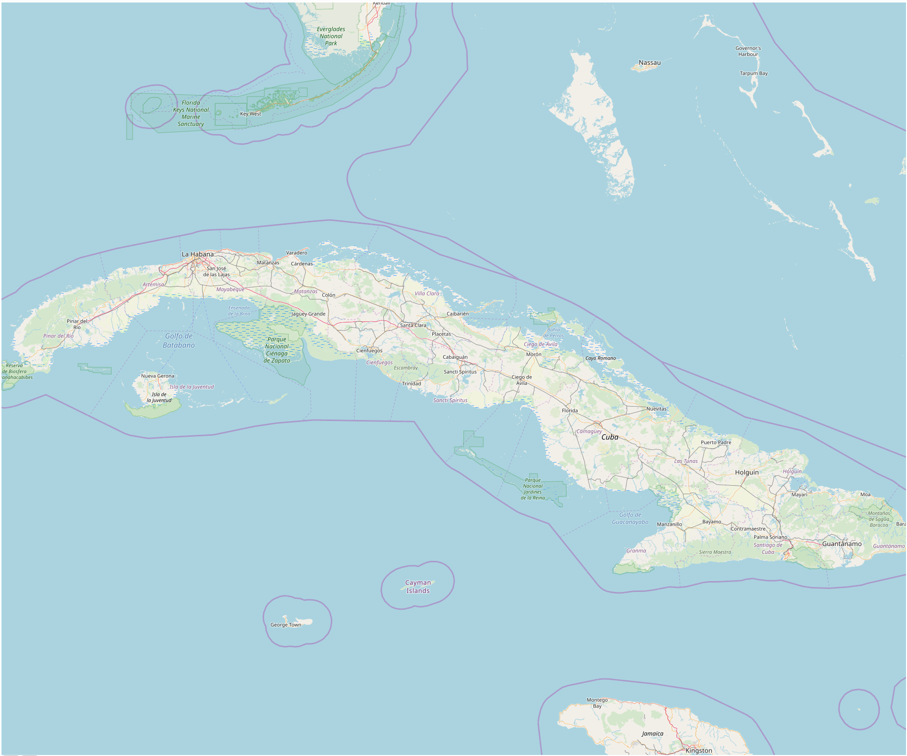

<!-- <div class="container"> -->
  <!--  -->
<!-- </div> -->

<!-- <ng-container *ngFor="let caret of newCarets"> -->
  <!-- <div -->
    <!-- *ngIf="isInside(caret)" -->
    <!-- class="caret" -->
    <!-- [style.top]="caret.lat + 'px'" -->
    <!-- [style.left]="caret.lon + 'px'" -->
    <!-- [style.backgroundColor]="caret.color" -->
    <!-- [style.width]="CARET_RADIO + 'px'" -->
    <!-- [style.height]="CARET_RADIO + 'px'" -->
    <!-- [matTooltip]="caret.description" -->
  <!-- ></div> -->
<!-- </ng-container> -->